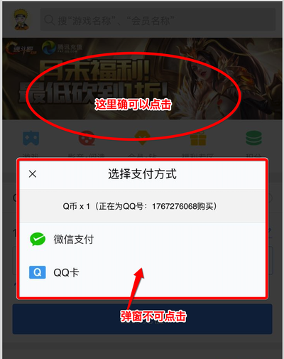

某天发现了一个奇怪的现象。
一般我们会在点击支付的时候，弹出一个模态框，让用户选择支付渠道。
突然发现某个IOS微信手机上，当点击输入金额后，用户点击支付，弹窗出现后，无法点击中弹窗上的渠道。但是却能在非弹窗所在的空白地方，选中有反馈。这种感觉就像dom显示的地方和dom真实的地方分离了一样诡异。如下图所示。

我们知道 IOS 有个很好的优化，就是当用户手动输入输入框时，IOS会自己把输入框弹上来，来确保输入框一定在可视框内，Android 没有这个优化，以前我们还经常对安卓做这种优化。
后来发现确实是这个优化导致了【弹窗虽然恢复正常了，但是body还是在键盘弹上去的位置】， 是由于 IOS 下的渲染问题导致的，当键盘弹下来的时候，弹窗下的body没有触发重绘。
所以问题变成了简单的，怎么让键盘下去的时候，body能够重绘。
我们首先想到的是，键盘收起的时候，resize 事件应该会触发，试着在 resize 中做处理，结果发现，IOS下竟然不会触发 resize, 也就是 IOS 下，当键盘收起的时候，并不会改变视窗的大小，所以也就不会触发 resize 事件。这也是为什么如果你的 body 本来是 100% 高度的，被键盘弹上去后，可能变成 120%， 你的body竟然可以滚动了。而且下面没有内容，还是白色的空白区域。安卓上键盘收起时视窗大小会改变，所以会触发 resize 事件，因此不会有这个问题。
resize 走不通，那怎么让它触发重绘呢？想到 IOS 下，当键盘收起的时候，input不会被 focus 了（可以看到光标消失了），也就是说很有可能触发 blur 事件。经过证实，确实是触发了 blur。所以确定去触发重绘的时机就是 blur 时。
现在的问题就是重绘要怎么写呢？ 以前在 IOS 上遇到了很多渲染的坑，经验告诉我，只要让页面【动一下】就可以了。比如让页面 scrollTop = 0, 或者再 focus 一下，或者 click touch一下之类的。
这里为了让页面不会由于 scrollTop = 0 突然往上一下，就可以设置 scrollTop = scrollTop 也可以。
1 | <input @blur=fixbug/> |
这种只能在单一的input上做处理不太好。如果要在所有 input 上都生效可以监听在document上。这时候，只需要判断下是不是 input 或者 textarea 元素就可以了。
1 | // 自行实现是否是 iOS 的判断，一般把 ipad,ipod, iphone 跟 navigagor.userAgent indexOf 一下就行 |
在写这篇文章的时候，发现也有人碰到了类似的问题，他们是用的 scrollIntoView，我觉得也挺好的。但是不久之前，有同事在 IOS 11 上某个版本的时候，用 scrollIntoView会遇到页面卡住滑不动的情况，并且只在IOS11上的某个小版本出现，担心它还会有同样的问题，所以我们最终还是使用了 document.body.scrollTop 来解决。
他们的代码如下，我也想记录下来日后参考，都大同小异：
1 | ;(/iphone|ipod|ipad/i.test(navigator.appVersion)) && document.addEventListener('blur', (e) => { 'input', 'textarea'].includes(e.target.localName) && document.body.scrollIntoView(false) }, true) |
总结
有的时候想想做前端真的是件不容易的事情，尤其是要跟浏览器打交道的时候，突然某天你可能发现之前跑的好好的版本，怎么突然间出问题了，你会先怀疑自己，再去找问题，再去复现问题，再去想怎么 hack。关键是有的时候你知道了怎么hack,有可能还是不知道是谁的bug,为什么会这样。太多外界因素（应用，系统）影响你的判断，并且你可能比较难去干预或者去告诉他你这里有bug。🌹